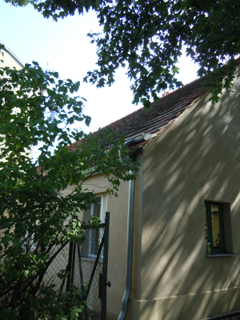
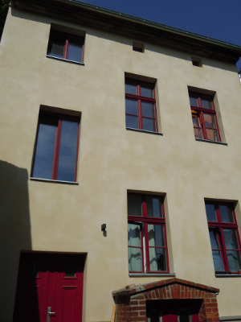
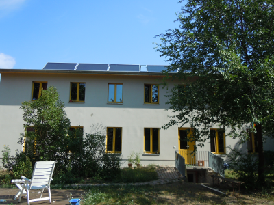

Häuser
Auf dem Gelände sind noch drei von ursprünglich fünf Gebäuden erhalten.Kolonistenhaus
Das Kolonistenhaus ist das kleinste und älteste der drei Häuser. Früher wohnte dort eine Familie auf engem Raum. Heute ist es unser Gemeinschaftshaus. Wo schon vor über 200 Jahren gekocht wurde, kochen, essen und lachen wir heute mit allen Mitbewohnenden und Gästen.
Mietshaus
Im Mietshaus haben wir von Dach bis Keller alles saniert und so 12 Räume zum Leben, Bewegen und Werkeln geschaffen. Dabei hat uns dieses Haus vor viele lustige Rätsel gestellt: Wieso haben die Menschen hier ihren schönsten Kachelhofen in den Keller gestellt, wer hat das ausgeklügelte Regenrinnensystem unter(!) dem Dach gebaut, wer hat in den Zimmern mit der knallpinken Decke gewohnt und was ist die Geschichte des einzelnen roten Schuhs? Lustig ist, dass das Haus gerade mal sechs Meter breit ist.
Gartenhaus
Das Gartenhaus (Fabrikgebäude) liegt lang gestreckt im Hof. Bei Kauf war es leider sehr stark zerfallen. Dach und Zwischendecke waren kaputt. (Wir haben gehört, dass es schon in den 70ern durchgeregnet haben soll...) Heute ist es mit Dämmung, neuen Fenstern, Solorkollektoren und Lüftungsanlage zum Niedrigenergiehaus geworden.
Hof
Im Hof gibt es noch weitere denkmalgeschützte Artefakte wie historisches Pflaster und einen Erdkeller zu entdecken.